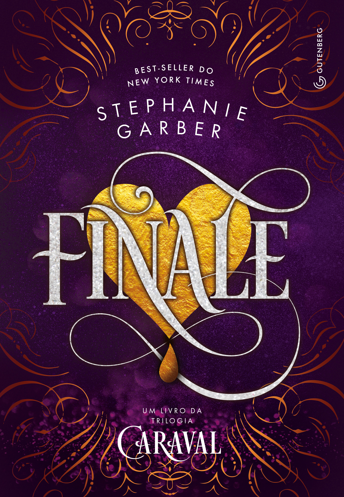

Bem-vindo ao Entre páginas
O Entre Páginas é um cantinho literário onde você pode encontrar resenhas, recomendações e muito mais!
Sobre mim
Meu nome é Iohana Freitas e sou uma apaixonada pela leitura. Aqui, compartilho minhas resenhas e recomendações literárias.
Resenhas
Confira nossas resenhas de livros, com análises detalhadas e opiniões sinceras sobre as obras que li.
-
🎪 Caraval — Stephanie Garber
“nada é exatamente o que parece”
🎪 Caraval foi uma daquelas leituras que me fizeram entrar completamente no universo da
história. A atmosfera misteriosa, os jogos, os personagens e aquela sensação constante de não
saber o que é real fazem com que seja muito fácil continuar lendo.
Scarlett pode ser um pouco dramática em alguns momentos — e olha que eu tive vontade de sacudir
ela algumas vezes KKKKK —, mas gostei muito de acompanhar a evolução dela e vê-la começando a
tomar suas próprias decisões.
E preciso falar de julian, porque eu simplesmente adoro a dinâmica dele com a scarlett. 💙
Estante
Explore nossa estante virtual, onde você encontrará uma seleção de livros que já li e recomendo!
| Livro 1 | Livro 2 | Livro 3 |
|---|---|---|
|
Caraval, de Stephanie Garber 
|
Lendario, de Stephanie Garber |
Finale, de Stephanie Garber  |
|
O Clã dos Magos, de Trudi Canavan 
|
A Aprendiz, de Trudi Canavan 
|
O Lorde Supremo, de Trudi Canavan 
|
|
Nove noites e um sonho 
|
A tempestade, de Lesley Livingston 
|
A espera de Romeu, de Lesley Livingston 
|